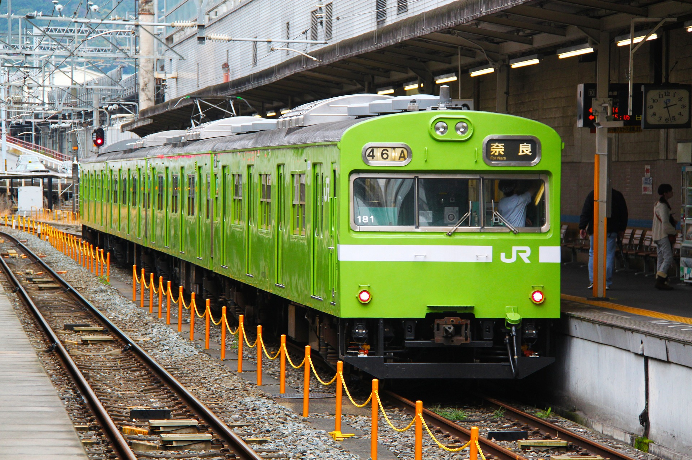

Takes on Japan
-

Food
10/10, 90% of our savings went to this
Japanese cuisine is very unique and special. From fancy sushi to quick street ramen, that are a big variety of foods that you can find for very cheap, or very expensive. But the best thing about eating in Japan is that you can find food from anywhere in the world, and it will be good.
Our group's favorite japanese foods are Sushi, Tonkatsu, Ramen, Okonomiyaki and Gyudon.
-

Trains
One of the most comfortable transportations, until rush hour begins
Tokyo subway is awesome because it is easy to use and covers the whole city. The train network is so vast that is hard to navigate just by looking at the map, and there are more than one map, because of the multiple companies.
You can tell that Tokyo is built around it's station when most of the commerce are centered around them, even the roads!
Some trivia about Tokyo Metro: You can easily find your station by its number and color, You can buy a tourist pass for unlimited travel on all subway lines. Tokyo subway has 13 lines and 285 stations. It can get really busy early in the morning or around 5pm tho.